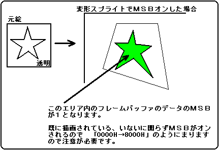

★
HARDWARE Manual
★
VDP1ユーザーズマニュアル
▲
戻る
｜
進む
▼
VDP1ユーザーズマニュアル/第６章 コマンドテーブル
■MSBオン
MSBオンビット：
MSB on(MON)、ビット15
MON
処理
0
フレームバッファ上のピクセルデータのMSBを変更しない
1
フレームバッファ上のピクセルデータのMSBを1にする
VDP2がシャドウ(スクロール面のピクセルデータの輝度を落とす)またはウィンドウ(指定した領域に別の面を表示する)を使用するモードになっている場合に、最上位ビット(MSB)が1のときシャドウ、ウィンドウの処理を行います。
既にフレームバッファに描かれたピクセルにたいしてMSBを1(オン)にします。カラーコードはフレームバッファがカラーバンクコードの場合のみ有効です(MSBは、VDP2側でシャドウイネーブル、ウィンドウイネーブルに使用するので、RGB識別ビットが存在しないため)。色演算はできません。色演算はリプレースを指定してください。
テクスチャパーツの場合、元絵データはピクセルの有る無し(透明、エンドコードがピクセル無し、それ以外が有り)にしか使いませんので、カラーコードはRGBコードでも、カラーバンクコードでも使うことができます。ノンテクスチャパーツの場合も、ノンテクスチャカラーは描画に反映されません。
MSBオンを1に設定した場合、色演算を指定しない(リプレース)でください。MSBオンが1の場合、色演算は何の意味ももたず、処理時間のみ大幅にかかりますので注意してください。
メッシュ処理をしたパーツは、メッシュ状にMSBがオンされます。
MSBオンの例を次に示します。
図6.16 MSBオン

▲
戻る
｜
進む
▼
★
HARDWARE Manual
★
VDP1ユーザーズマニュアル
Copyright SEGA ENTERPRISES, LTD., 1997
 ★HARDWARE Manual
★VDP1ユーザーズマニュアル
★HARDWARE Manual
★VDP1ユーザーズマニュアル
★HARDWARE Manual
★VDP1ユーザーズマニュアル
★HARDWARE Manual
★VDP1ユーザーズマニュアル